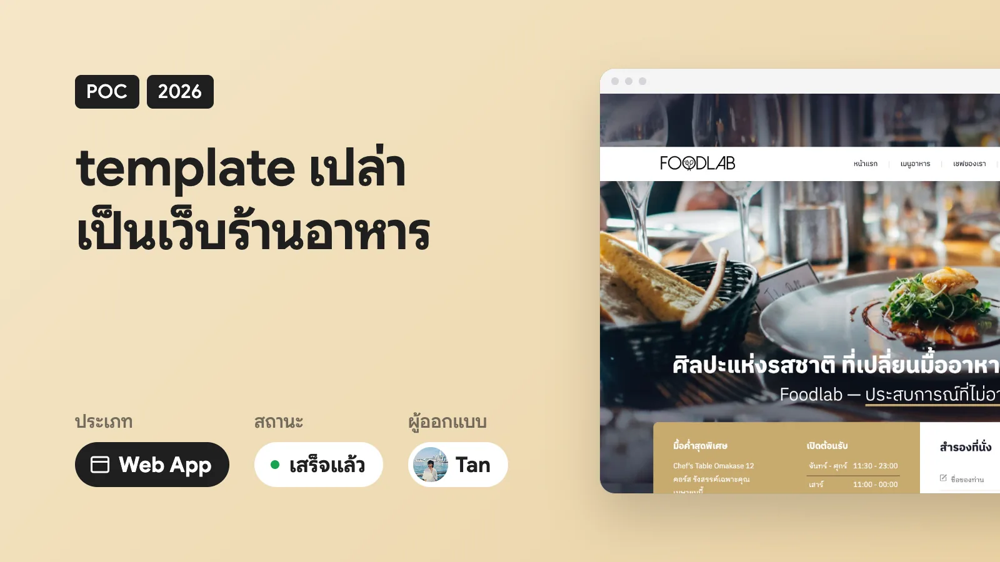
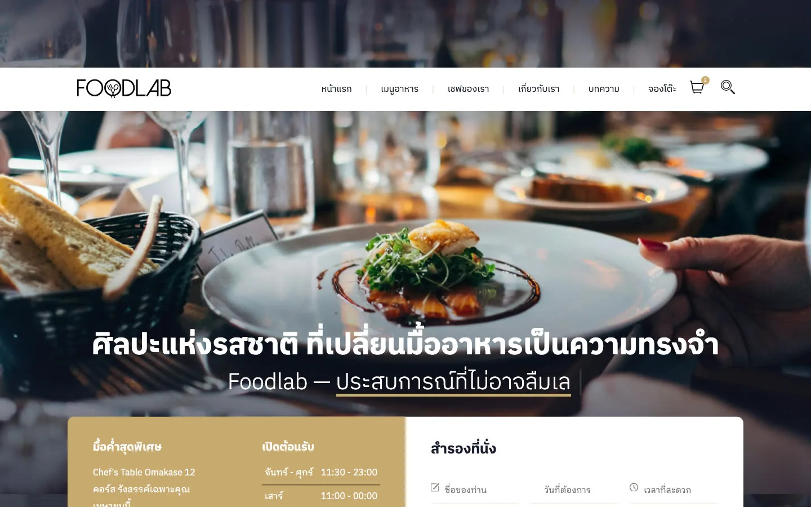
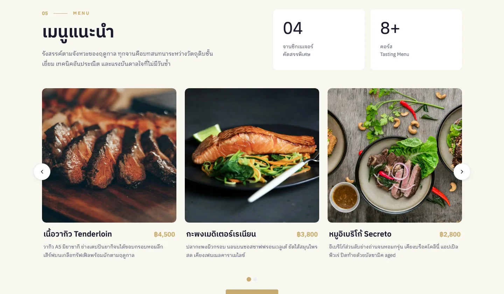
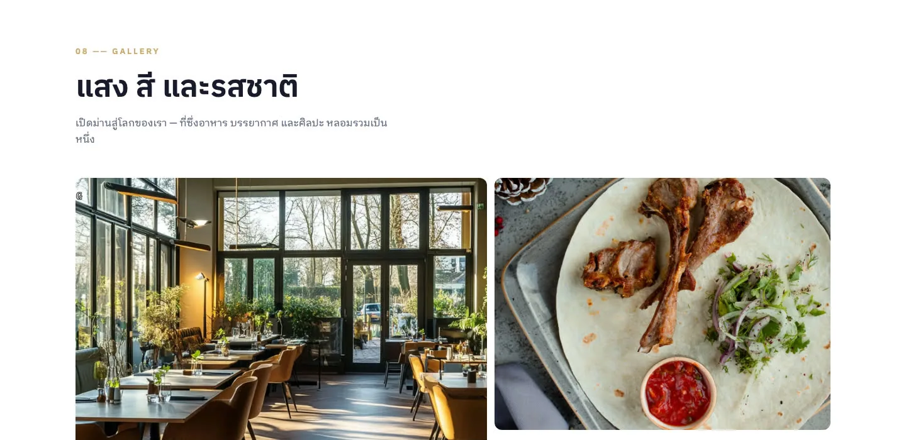
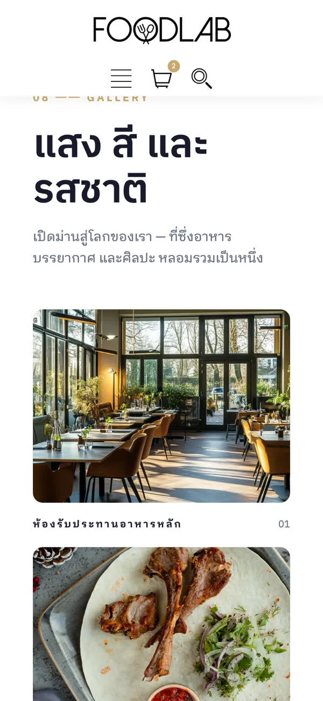
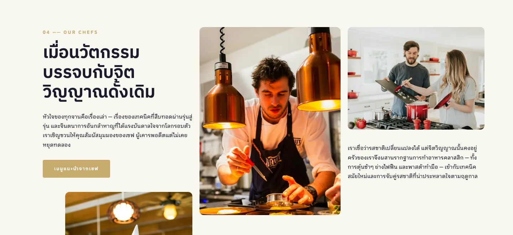
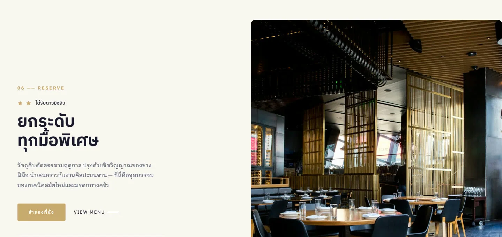
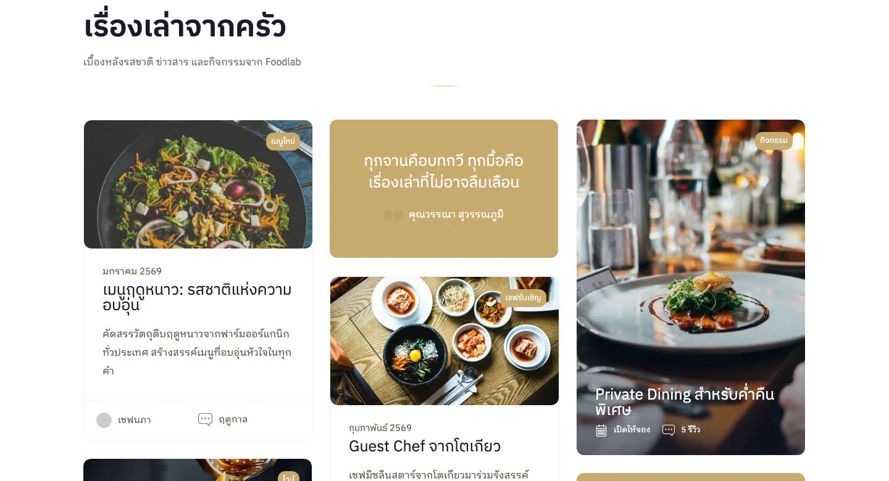

FoodLab
สิ่งที่ทำให้เว็บ "เป็นเรา" ไม่ใช่โค้ด — แต่เป็นการตัดสินใจทุกจุดว่า "อยากให้คนรู้สึกอะไร"

ถ้าเอา template เปล่าจาก ThemeForest มาลองเข้าหน้าที่ตัวเอง จะเป็นยังไง? ได้อะไร? เสียอะไร? — บันทึกจากการท้าทายระบบ
The Challenge
คำถามเดียวที่อยากรู้คำตอบ

ถ้าซื้อ template เปล่าจาก ThemeForest แล้วใช้ AI ช่วยปรับหน้าตา — จะได้เว็บที่ "เป็นเรา" จริงๆ ไหม? หรือจะได้แค่เว็บที่ "พอใช้ได้" แต่ขาดจิตวิญญาณ?
Education Theme → Fine Dining Restaurant
- ใช้ ThemeForest template: Education & Learning theme (HTML)
- เป้าหมาย: สร้างเว็บ Fine Dining Restaurant "FoodLab" ที่ดูหรูและน่าเชื่อถือ
- วิธี: ให้ AI ช่วย customize layout, content, สี, typography ทั้งหมด
- ข้อจำกัด: ห้ามเขียน code เองตั้งแต่ศูนย์ ต้องใช้โครงสร้าง template เดิม
ลองดูผลลัพธ์จริงได้ที่ Live Demo ของ FoodLab
Before → After
จาก template การศึกษา กลายเป็นร้านอาหาร fine dining

| Before — Template เดิม | After — FoodLab |
|---|---|
| Education & Learning theme | Fine Dining Restaurant |
| หน้า Course Listing | Hero + Story + Menu + Chef |
| สีฟ้า-ขาว แนวการศึกษา | สีทอง-ดำ luxury aesthetic |
| Layout สำหรับ LMS | Scroll animation + Parallax |
| Typography ธรรมดา | Thai + EN bilingual content |
ผลลัพธ์: เว็บ 9 sections ที่ใช้งานได้จริง
- Hero — "The Art of Taste" พร้อม booking CTA
- Our Story — เรื่องราว 15 ปีของ FoodLab
- Testimonials — Guest reviews แบบ carousel
- Chef Spotlight — แนะนำเชฟและแรงบันดาลใจ
- Menu — อาหาร signature พร้อมราคา (฿2,200–฿6,500)
- Reservation — Omakase & tasting menu
- Blog — เนื้อหาจาก kitchen
- Gallery — รูปอาหารและบรรยากาศ
- Contact — แผนที่และเวลาเปิดปิด
Key Insights
สิ่งที่ค้นพบจากการทดลองนี้


Layout ไวขึ้นจริง
โครงสร้าง grid, responsive, animation ได้มาฟรี — ไม่ต้องเขียนจากศูนย์
แต่ต้องใส่ตัวเราเข้าไป
Template ให้โครงร่าง แต่ "จิตวิญญาณ" ต้องมาจากคนออกแบบ — สี, tone, content ทุกอย่าง
ต้องรู้จักงานตัวเองกว่าเดิม
การสื่อสารกับ AI บังคับให้เราต้องชัดเจนกับ vision — เข้าใจ brand เราเองมากขึ้น
ได้รู้จัก tools ใหม่ทุกวัน
กระบวนการนี้ทำให้ค้นพบ workflow, plugins, และเทคนิคใหม่ๆ ที่ไม่เคยใช้มาก่อน
The Honest Truth
สิ่งที่ได้เรียนรู้จริงๆ

เร็วขึ้นในแง่ Layout
Grid, responsive breakpoints, scroll animation — ของพวกนี้ template ให้มาหมด จากที่ต้องเขียน CSS เองทั้งหมด กลายเป็นแค่ปรับค่า
แต่ต้องใส่ "ความเป็นเรา" เข้าไปมากกว่าเดิม
Template ทำให้ Layout เหมือนกันหมด — ความต่างอยู่ที่ content, tone of voice, สีที่เลือก, รูปที่ใช้ ผลคือต้อง เผลอใส่ตัวเองเข้าไปมากกว่าตอนเขียนเอง เพราะโครงสร้างมันเหมือนกันหมดแล้ว
ต้องสื่อสารกับ AI ให้ชัด = เข้าใจงานตัวเองดีขึ้น
พอต้องอธิบายให้ AI ว่า "อยากให้หน้าตาเป็นแบบไหน" — มันบังคับให้คิดให้ชัดกว่าเดิมเยอะ ได้รู้จักตัวเองในฐานะ designer มากขึ้น ว่าจริงๆ แล้ว visual identity ที่ต้องการคืออะไร
ได้รู้จัก Tools ใหม่ทุกวัน
กระบวนการ template → customize ด้วย AI ทำให้เจอ workflow ใหม่ เช่น CSS custom properties, scroll-driven animation, AI image generation — ทุกวันมีของใหม่ให้เรียน
Takeaways
ข้อสรุปหลังจบการทดลอง

Template ไม่ใช่ shortcut — มันเป็น starting point ที่ดี แต่ output สุดท้ายยังต้องอาศัย design thinking, brand understanding, และ content strategy เหมือนเดิม
AI เก่งเรื่อง execution แต่ direction ต้องมาจากคน — บอกให้ "ทำให้สวย" ไม่พอ ต้องบอกว่า "สวยแบบไหน" ถึงจะได้ผลที่ต้องการ
เร็วขึ้น ≠ ง่ายขึ้น — ใช้เวลาน้อยลงกับ code แต่ใช้เวลามากขึ้นกับ decision-making ผลรวมคือได้งานที่ดีขึ้นในเวลาเท่าๆ กัน
การทดลองแบบนี้ควรทำเรื่อยๆ — ทุกครั้งที่ลอง workflow ใหม่ ได้ perspective ใหม่กลับมาเสมอ ไม่มีครั้งไหนเสียเวลาเปล่า
Stack
เครื่องมือที่ใช้ในการทดลองนี้
